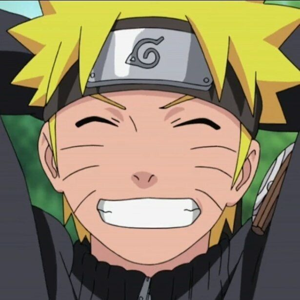
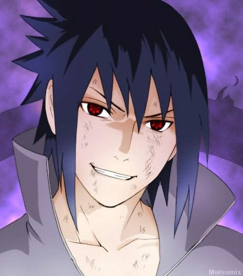
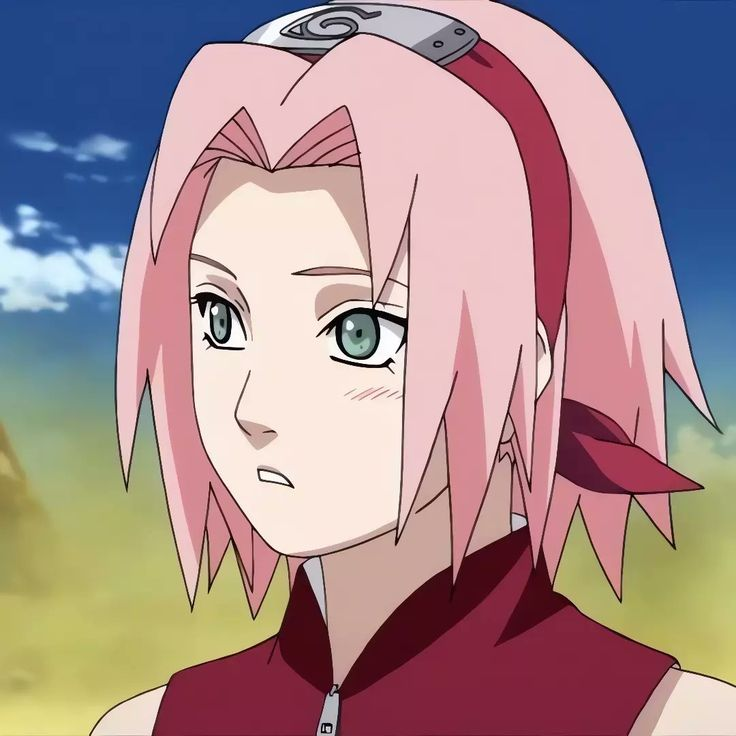

Naruto
Equipo 7 de Naruto
El Equipo 7 es el grupo protagonista de Naruto y uno de los equipos ninja mas importantes de toda la historia de Konoha. Naruto Uzumaki, Sasuke Uchiha, Sakura Haruno y Kakashi Hatake forman una alineacion marcada por la amistad, la rivalidad, la superacion personal y la lucha por romper el ciclo de odio que atraviesa la serie.
Volver a NarutoGuia general
El equipo que sostiene el corazon de la serie
El Equipo 7 no es solo un grupo de entrenamiento. Es la base emocional de Naruto porque cada uno de sus miembros representa una forma distinta de afrontar el dolor, la perdida, la ambicion y el deseo de ser reconocido. La serie avanza a traves de sus choques, sus promesas y sus reencuentros.
Buena parte de la historia gira alrededor de la relacion entre Naruto y Sasuke, pero Sakura y Kakashi son igual de importantes para equilibrar el grupo. Sakura encarna el crecimiento mas visible dentro del equipo y Kakashi actua como mentor, figura traumatizada por la guerra y ejemplo de como no abandonar a los companeros.
- Su historia mezcla amistad, rivalidad, redencion y trabajo en equipo.
- La ruptura del grupo define gran parte de Naruto Shippuden.
- Su reunion simboliza el cierre de una era y el fin del mayor conflicto shinobi.
Miembros principales

Naruto Uzumaki
ProtagonistaRol: protagonista y ninja impredecible que sostiene el ideal de no rendirse.
De que va: huerfano rechazado por el pueblo, suena con convertirse en Hokage y lleva sellado en su interior a Kurama, el zorro de nueve colas.
Poderes: clones de sombra, Rasengan, Modo Sabio, chakra de Kurama y el poder de los Seis Caminos.
Personalidad: optimista, terco, carismatico y extremadamente leal a sus promesas.

Sasuke Uchiha
RivalRol: rival de Naruto y una de las piezas centrales del conflicto de la serie.
De que va: ultimo gran superviviente del clan Uchiha, marcado por la masacre de su familia y obsesionado durante anos con vengarse de Itachi.
Poderes: Sharingan, Mangekyou Sharingan, Rinnegan, Chidori, Amaterasu y Susanoo.
Personalidad: frio, inteligente, reservado y consumido durante mucho tiempo por la venganza.

Sakura Haruno
Kunoichi medicaRol: especialista medica y combatiente clave en la madurez del equipo.
De que va: empieza como el miembro menos preparado para el combate duro, pero su entrenamiento con Tsunade la convierte en una de las ninjas mas completas de su generacion.
Poderes: fuerza fisica monstruosa, jutsus medicos, control de chakra y Byakugou.
Personalidad: inteligente, emocional, disciplinada y muy determinada cuando encuentra un objetivo claro.

Kakashi Hatake
SenseiRol: lider y maestro del Equipo 7, encargado de convertir un grupo inestable en una unidad real.
De que va: ninja legendario conocido como el ninja copiador, ex miembro ANBU y veterano de una infancia marcada por la perdida.
Poderes: Sharingan, Chidori y Raikiri, enorme experiencia tactica y cientos de jutsus copiados.
Personalidad: relajado por fuera, pero sabio, observador y muy serio cuando llega el combate de verdad.
Evolucion del Equipo 7
Naruto clasico
El nacimiento del equipo y la primera gran fractura
Aqui se construye la identidad del equipo: primeras misiones, el examen de las campanas, la mision en el Pais de las Olas, los Examenes Chunin y la creciente rivalidad entre Naruto y Sasuke. Todo culmina con la decision de Sasuke de abandonar Konoha para buscar mas poder.
- Aprenden que la cooperacion vale mas que el talento aislado.
- Naruto empieza a destacar por su voluntad y crecimiento explosivo.
- Sasuke se aleja convencido de que el odio es su unico camino.
Naruto Shippuden
Rescate, guerra y reunion final
La segunda etapa gira alrededor del intento de rescatar a Sasuke, el crecimiento brutal de Naruto y Sakura, y el regreso del equipo en medio de la Cuarta Gran Guerra Ninja. Ya no son simples alumnos: son piezas decisivas para salvar el mundo shinobi.
- Sakura se consolida como heredera del estilo de Tsunade.
- Naruto domina nuevas transformaciones y se convierte en el eje de la alianza shinobi.
- Sasuke vuelve al final con un papel ambiguo antes de su ultimo duelo con Naruto.
Legado
El impacto que deja el Equipo 7
Tras la guerra, Kakashi se convierte en Sexto Hokage y Naruto termina alcanzando el cargo de Septimo Hokage. Sasuke elige redimirse viajando por el mundo y Sakura se consolida como una de las ninjas medicas mas fuertes de la historia reciente de Konoha.
- El equipo simboliza como romper una cadena historica de odio y venganza.
- Su historia deja un modelo para la siguiente generacion de ninjas.
- Incluso separados, los cuatro siguen conectados por lo vivido juntos.
Momentos mas importantes
Prueba inicial
La prueba de las campanas
Kakashi pone al grupo frente a una prueba que parecia individual, pero que en realidad premiaba el trabajo en equipo. Es el momento en que el Equipo 7 entiende cual sera su leccion central.
Duelo simbolico
Valle del Fin
La primera gran pelea entre Naruto y Sasuke resume toda su relacion: amistad, envidia, frustracion y destinos enfrentados. Es uno de los puntos de no retorno de la serie.
Reencuentro
La Guerra Ninja y el regreso del equipo
Durante la Cuarta Gran Guerra Ninja, el Equipo 7 vuelve a combatir junto de forma completa. La reunion funciona como espejo del pasado, pero con todos mucho mas maduros y poderosos.
Batalla final
Combate contra Kaguya Otsutsuki
Naruto, Sasuke, Sakura y Kakashi deben actuar como una unidad para sellar a Kaguya. Es la prueba definitiva de que el viejo equipo aun puede salvar el mundo cuando trabaja sincronizado.
Cierre emocional
Naruto vs Sasuke final
El ultimo choque entre ambos rivales no solo decide quien tiene razon: tambien rompe por fin el ciclo de violencia que se arrastraba desde generaciones anteriores.
Curiosidades y detalles extra
- Kakashi fue alumno de Minato Namikaze, el Cuarto Hokage y padre de Naruto.
- Naruto y Sasuke son reencarnaciones de Ashura e Indra, lo que da un peso mitologico a su rivalidad.
- Sakura acabo siendo una de las ninjas medicas mas fuertes gracias a su control de chakra y su entrenamiento con Tsunade.
- Kakashi llego a convertirse en el Sexto Hokage tras el final de la guerra.
- Naruto cumplio su sueno y se convirtio en el Septimo Hokage, cerrando el mayor objetivo de su infancia.
- El Equipo 7 refleja tres formas de heredar el dolor: superarlo, usarlo para crecer o dejarse arrastrar por el hasta tocar fondo.